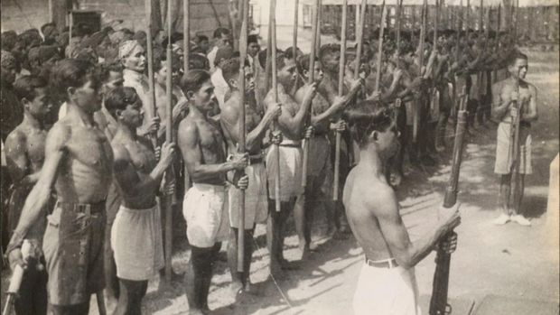
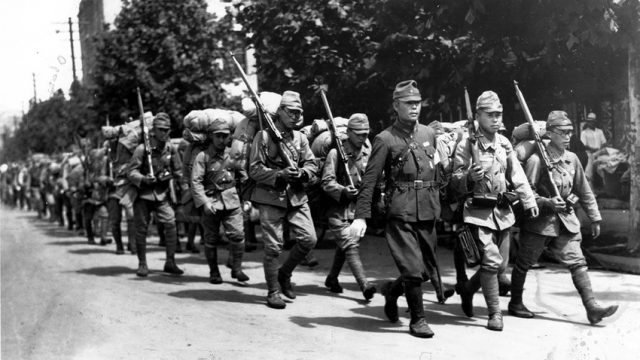

Perlawanan Bangsa Indonesia Melawan Jepang
Masa pendudukan Jepang di Indonesia dimulai pada tahun 1942 dan akhir-akhirnya pada tanggal 17 Agustus 1945 seiring dengan Proklamasi Kemerdekaan Indonesia oleh Soekarno dan M. Hatta atas nama bangsa Indonesia.
1942
Jepang mulai menginvasi Indonesia di Kalimantan (Tarakan) dan Sulawesi (Manado),juga menginvasi kota kota lain
1943
Jepang membentuk pasukan yaitu Giyugun di Sumatra dan PETA di Jawa
1944
Jepang meninggalkan Irian Barat karena keberadaan Sekutu
1945
Terbentuknya BPUPKI untuk mempersiapkan kemerdekaan Indonesia,dan dijatuhkan 2 bom atom oleh Amerika Serikat ke 2 kota Jepang sehigga Jepang pun menyerah.Mengetahui Jepang telah menyerah Para Pemuda serta Soekarno dan Hatta menyiapkan teks Proklamasi yang akan dibacakan pagi hari pada tanggal 17 Agustus
Pembacaan Teks Proklamasi

Teks proklamasi Kemerdekaan Indonesia dibacakan presiden pertama Indonesia, Soekarno pada 17 Agustus 1945 pukul 10.00 WIB pukul 10.00 WIB Peristiwa ini mengawali titik baru Indonesia bisa terlepas dari penjajahan. Akhirnya, bangsa ini bisa mempertahankan kemerdekaan bangsa Indonesia.